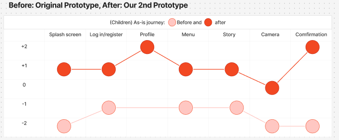
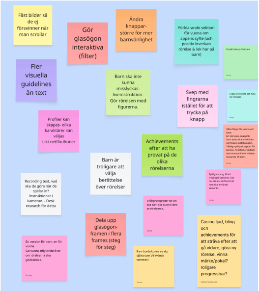
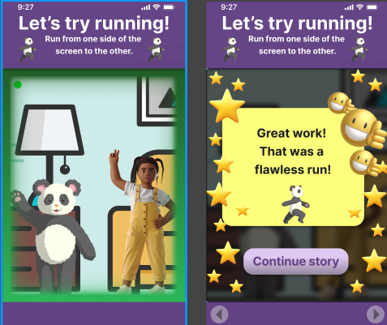
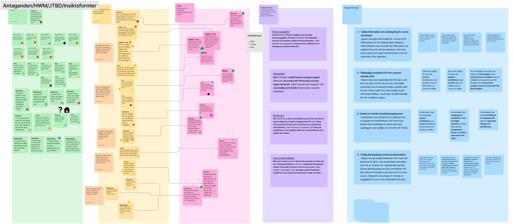
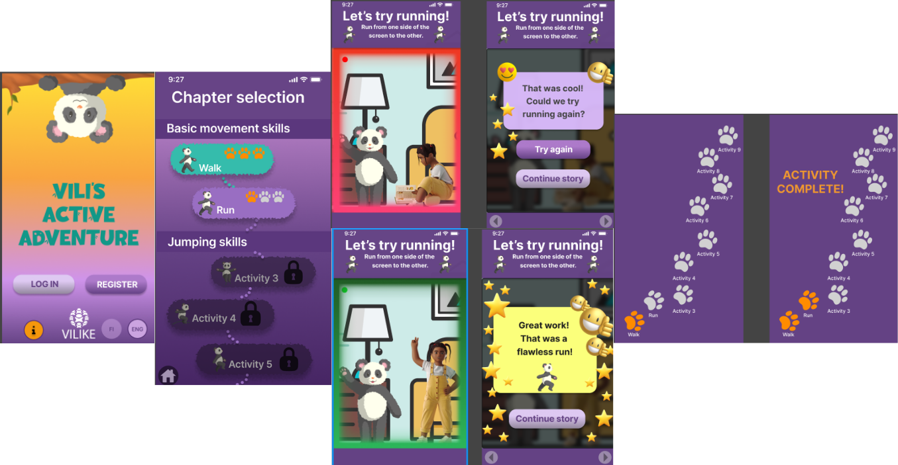

ViLike: Vili's Active Adventure
A five-week UX/UI concept developed with ViLike, exploring how to make everyday movement feel more like play.
UX/UI Designer
ViLike, Finland
Figma
5 weeks
Gamification
Child-centred UX

Making movement feel like an invitation
The brief was to encourage children to be more active. I kept coming back to one question: how could the experience invite them to move without making it feel like another task?

Exploring progress, play and feedback
I mapped the journey, sketched different ideas and developed prototype screens in Figma. I wanted the rewards to be easy to understand without taking attention away from the activity itself.

A concept, ready for further testing
The prototype brings together visible progress, feedback and rewards. It shows how the experience could work, but whether it changes everyday habits is a question for longer-term testing.
Behind the Design
From the first questions to a prototype
I moved from assumptions and quick sketches to a user journey and a clickable prototype. Each stage helped me decide what the child would see, do and understand next.
Crazy 8 Ideation

Quick sketches to explore different ways of turning movement into play.
Assumptions & HMW

Writing down assumptions and turning them into questions worth exploring.
User Journey

Mapping a child's steps through the experience, including possible moments of confusion or delight.
Prototype

A clickable concept showing the main flow, progression and rewards.
Key Learnings
Gamification
Feedback makes progress visible. The harder design decision is deciding when a reward supports the activity and when it becomes a distraction.
Child-centred Design
With younger users in mind, clear choices and timely feedback matter more than adding extra features.
Industry Collaboration
Working with ViLike meant considering the brief alongside the experience I wanted children to have.
Reflection
What I would test next
The next step I would want is to watch children use the prototype. What feels playful to a designer may not feel the same to a child, and that is worth finding out.
The collaboration also gave me practice explaining why a design choice belonged in the experience, rather than relying on how appealing it looked.